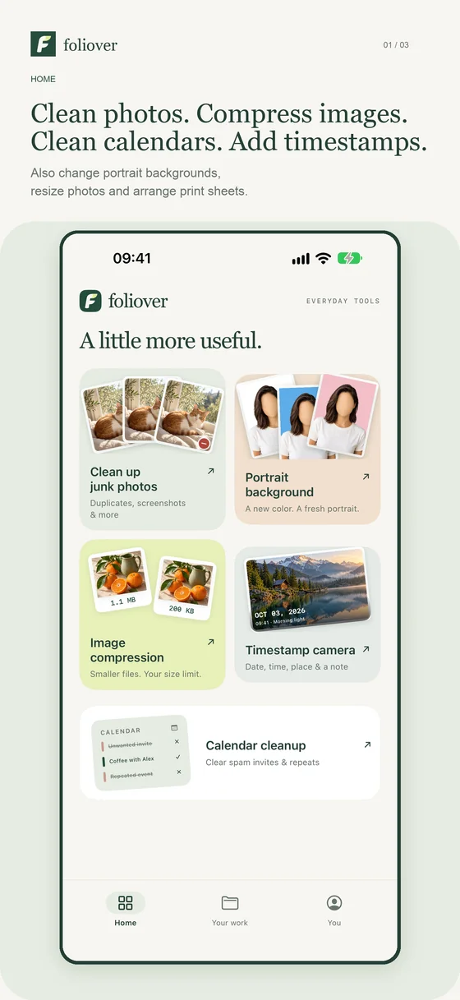
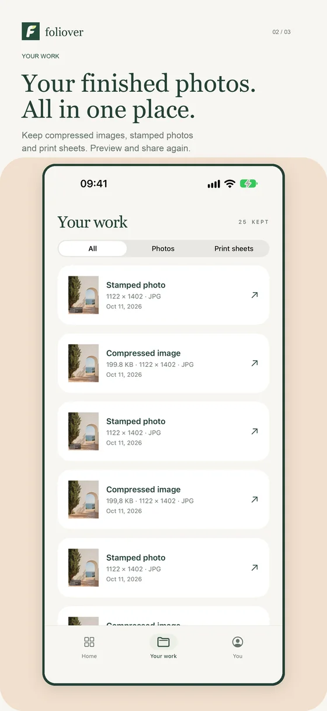

Find duplicate and similar photos
Review matching photos, screenshots, large items and videos. Confirm what to remove. Photos go to Recently Deleted.
iPhone & iPad · iOS 17 or later
Review duplicate photos and unwanted calendar events before removing them. Foliover also compresses images, adds timestamps and prepares photo print sheets.
Five on-device tools. No app account required.

Choose a tool for the task at hand and review its results before making changes.
Review matching photos, screenshots, large items and videos. Confirm what to remove. Photos go to Recently Deleted.
Scan a date range for duplicates, suspicious invitations and subscriptions. Select editable events individually or in a batch.
Compress or convert images, add a visible date and time, or crop a portrait and arrange copies on a print sheet.
Finished photo exports appear in Your work. Reopen them to share an image or review an earlier result.

You review the results and choose what to remove. Confirmed removals go to Recently Deleted in Photos.
Read-only subscriptions may need to be removed in Apple’s Calendar app. Use the scan to identify the source first.
Each tool includes one free successful use. A completed optional share can add one use for that tool, or you can choose a one-time unlock.